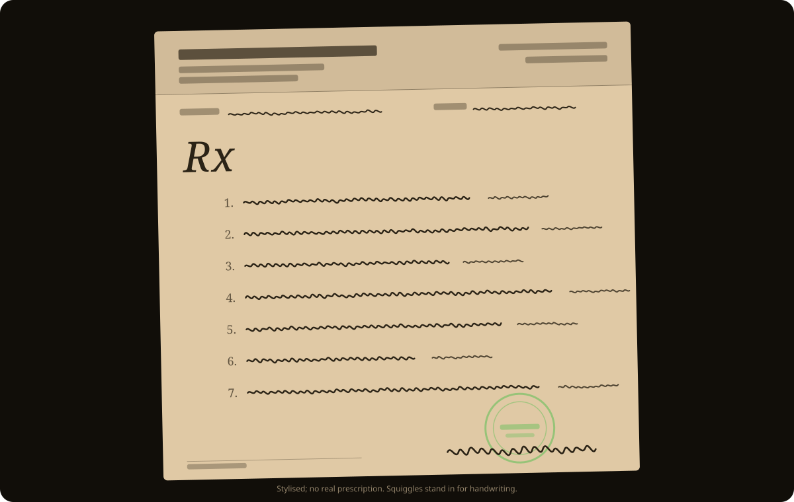
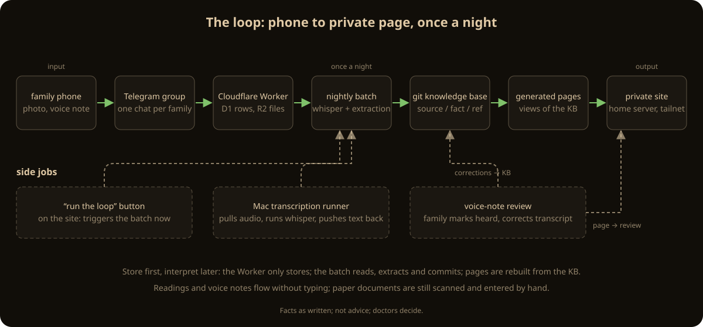
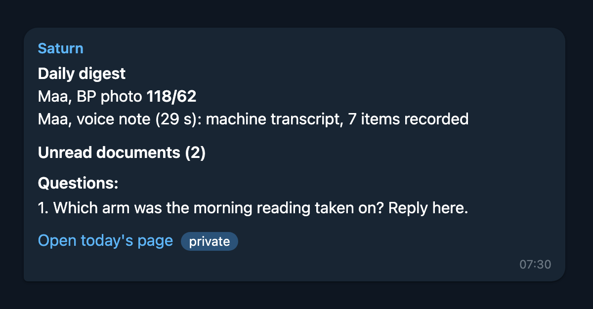
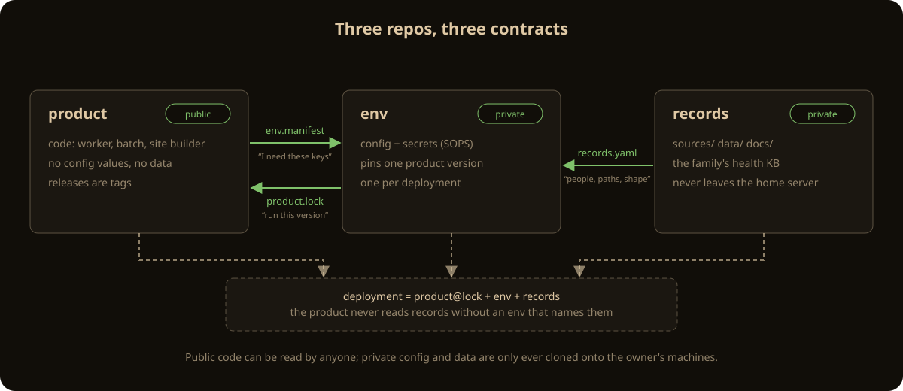
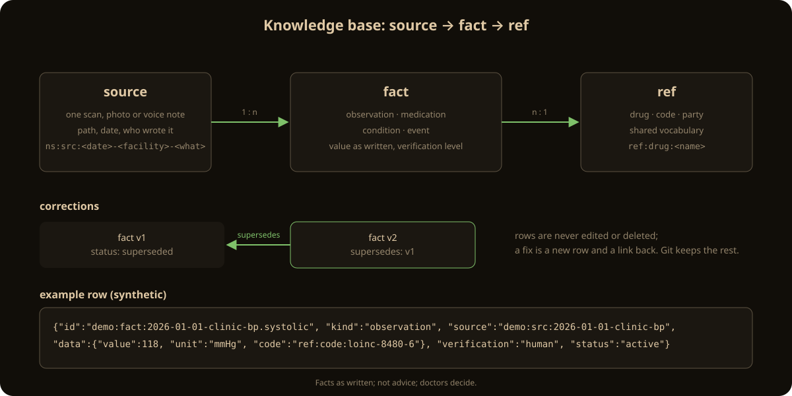
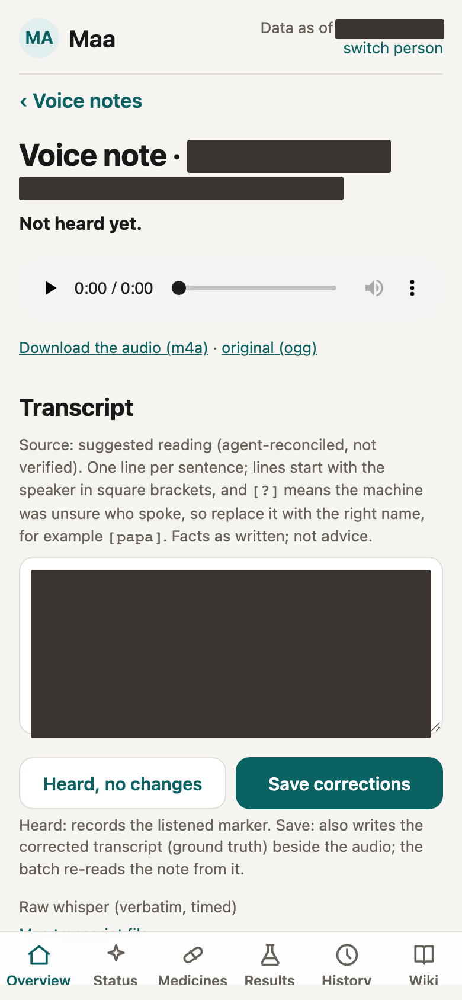
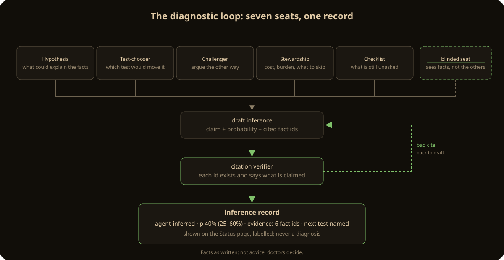
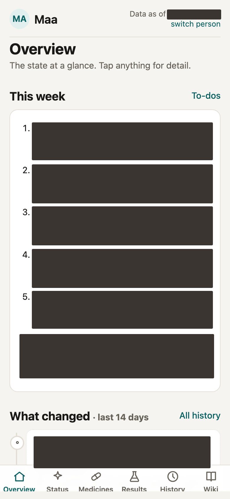
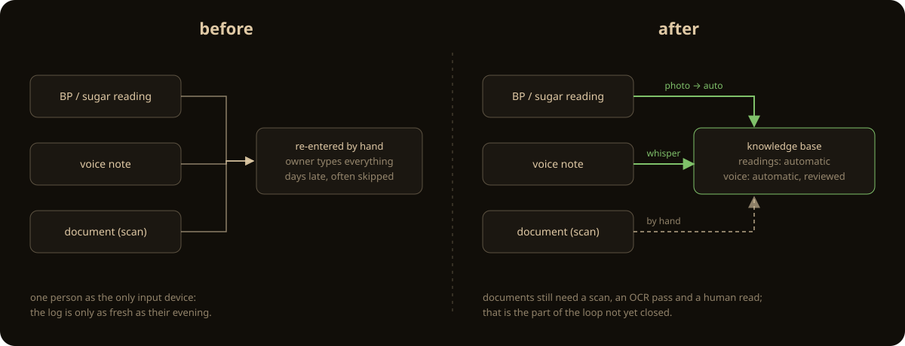

Saturn: a health log for a family far from its doctors
A Telegram group in, a git knowledge base in the middle, and a diagnostic loop behind one button
TL;DR
A handwritten prescription, a ten-minute consult, and a two-month wait for the next one. In plain English, I built a small system that keeps my parents' medical history in one place, reads what they send it every day, and prepares the questions for the next doctor. This is not a medical device and not a replacement for a doctor: it records what was said, flags what a fixed rule says to flag, and, in an opt-in mode, writes labelled hypotheses for me to carry into a consult. It went live on 27 October 2026. In its first ten days it took in a thousand-odd facts from about a hundred sources, ninety-odd photos and voice notes, mostly in Hindi. Nothing it produces is advice; the pages say so on every screen. Much of the code and most of the design notes were written with Claude Code; the decisions, the constraints and the review hour every night are mine.

The gap between visits
My parents live on their own in a small coal town in Jharkhand. My mother has a serious heart condition and recently had a small stroke. My father has a motorbike; an auto takes about thirty minutes to arrive; the nearest good hospital is more than ten kilometres away in a small city where specialists sit on fixed days and the labs close on Sundays. The tertiary centre is a long trip, possible about once in two months, and only when she is well enough to travel. I live in Bengaluru and work full time.
The consults themselves are the problem the system was built for. A doctor hears the complaint, makes the call, writes medicines by hand, says very little, and is very hard to reach afterwards. No questions, no reasoning, no follow-up channel. My parents describe the problem and trust the doctor as a black box; they do not speak in clinical terms and will not push back. Technical detail is lost in both directions. Between visits there is no supervision: no monitoring, no plan, no one watching the numbers. Visits happen when something goes wrong. Most of what any doctor knows about my mother's history is on slips like the one above, in a plastic folder, in the order they were filed.
Three constraints shaped every decision after that. The family will not learn a new app, so input had to be the chat app they already use. Every extra visit has a cost in health, not only money, so the output had to be one bundled list of asks per doctor, at most five, each answerable with a yes, a no or a test order. And I have about an hour a night, so whatever the system produced had to fit in that hour or it would not get read. The system's own notes carry these as a standing rule: tier every action as emergency, same-week or next-visit, and never write "rush" or "immediately" outside a genuine emergency.
What Saturn is, and is not
Saturn is a self-hosted home health logHome health logA household's medical record kept by the household: documents, readings, voice notes and the structured facts extracted from them, in a private git repository the family controls.Read the README for one household. Family members send blood-pressure photos, lab reports, prescriptions and voice notes, in Hindi, Hinglish or English, to a private Telegram group. A small Cloudflare Worker stores each message. A nightly batch transcribes and extracts structured facts into a git-based knowledge base, regenerates the pages that read from it, and sends me one digest. A private site on the home network shows the current state on a phone. A button on that site runs a bounded diagnostic review and sends the result back as a message.
The non-goals matter more than the goals. Saturn does not diagnose. It never suggests starting, stopping or changing a medicine; the product's rules file says so in its second line and the diagnostic loop enforces it with a regular expression over everything it writes. It does not talk to the family: the group is input-only and the bot never posts there (ADR 011). It does not run in real time; there are no alerts between the nightly runs, by design, because a real-time alert to two frightened people a thousand kilometres from me is worse than none (ADR 005). And it is not a product for other families yet. The code is shaped so it could be, but the only deployment is mine.
The trade-offs
Telegram instead of an app. An app would have been cleaner and would never have been opened. The group already existed; a bot was added to it. The cost is that every input is a photo or a voice note, so every input needs reading by a machine first.
A nightly batch instead of a live service. The only always-on part is a Worker on Cloudflare's free tier that verifies the webhook secret, writes the raw update to a D1 table and copies media to R2: no model calls, no queues, no cron (twelve lines). Everything that thinks runs once a day on a GitHub Actions runner. The fixed cost is zero and the running cost is under a dollar a month (high-level design). The cost is latency, and that latency turned out to be the first thing the family noticed; more on that below.
Git instead of a database. The knowledge base is newline-delimited JSON in a private repository, rebuilt into SQLite on every run. Every clone is a backup, every change is a signed commit, and a correction is a new row rather than an edit. The cost is that concurrent writers collide, which they did, twice, in the first week.
Three repositories instead of one. The code, the deployment configuration and the health data live in separate repositories with different owners of risk. The cost, stated in the decision record itself, is five to seven repositories instead of two and slower changes (ADR 008).
Local speech-to-text instead of a cloud API. Hindi voice notes are transcribed by whisper.cpp, pinned by version and model hash, on the runner or on my Mac. Audio never leaves the family's machines. The cost is speed: the GitHub runner transcribes at about five times slower than real time; the Mac on Metal at about 0.06 times real time (ADR 014).
A private site instead of a dashboard. The health pages are static HTML with no JavaScript, served only on a tailnetTailnetThe household's private Tailscale network. The site, the voice-review endpoint and the loop button exist only there; nothing is published to the internet and there is no tunnel.Read the design from a laptop at home. The cost is that only people on that network can see anything, which today means only me. That is a real limitation and it is in the list at the end.
The pipeline
One run, once a night, in order. The Telegram group receives whatever the family sends. The Cloudflare Worker stores the raw update in D1 and the media in R2, and does nothing else. The nightly batch pulls the new rows and media and commits them to the records repository first, raw, before anything reads them (pull). It then transcribes audio with whisper and extracts facts with a model in a single prompt-in, JSON-out turn that holds no credentials at all: no tools, an empty working directory, an allowlisted environment (extract, security notes). The knowledge base is rebuilt and validated; any bad row fails the build (validate). The generated pages are regenerated from it. A digest goes to me by private message, with every item numbered so I can answer by replying "3: yes" from the phone. The private site rebuilds itself within ten minutes of the commit.
Three side jobs sit beside the loop. The Mac transcription runner re-transcribes each voice note with a second engine and speaker separation whenever the laptop is awake, and pushes a signed commit. The voice-note review page lets me play a note, correct the transcript and mark it heard; the batch re-reads the note from my text instead of the machine's. The run-the-loop button queues one bounded diagnostic run on the home laptop.


Three repositories, three contracts
The first version was one repository, and that was the mistake that forced the split. Its history contained PHIProtected health informationAny health detail that identifies a person. In Saturn it lives only in the records repository, never in code, docs, tests, commit messages or logs.Read ADR 008 and once-pasted secrets, so the code could not be shared or reviewed, and any workflow in it could read every secret and every record. Write access to code was write access to my mother's file.
The split classifies by content, not by path. The product repository holds code, schemas, templates and synthetic fixtures, and nothing that names a person, a resource or an account. The env repository holds resource ids, encrypted secrets and the thin workflows; it is private, I am the only writer, and its workflows run only on a schedule or by hand, never on push. The records repository holds the data and has no workflows and no secrets at all. Three files join them: env.manifest.yaml in the product declares the resources and secret names an environment must supply; product.lock in the env pins the exact product commit that runs; records.yaml in the records names the people and the namespaces, so nothing in the product ever names a person.

The knowledge base
Three tables, and a rule. A source is anything received: a lab report, a prescription photo, a voice note, a chat line. A fact is one thing extracted from a source: an observation (a reading, a lab value), a medication, a condition or an event. A ref is a drug, a code or a party (a doctor, a lab). Every row carries who said it, how it was verified, and the exact quote it came from. The rule is in the schema header: a fact is never edited in place; a correction is a new row that supersedesSupersedeCorrect by adding, not editing: the new row points at the old one, the old one is marked superseded, nothing is deleted. The timeline keeps both, so a wrong reading can be shown as wrong rather than made to disappear.Read the schema the old one.
The rule earned its keep in the first week. A family account relayed through me said one hand; the doctor's note, read from handwriting, said the other; a later confirmation settled it. All three rows are still there, two of them superseded, and the status page shows which is current and why. A database with an UPDATE statement would have lost the disagreement, and the disagreement was the clinically interesting part.
The build is Python with the standard library and SQLite only. It validates every row against a JSON schema, refuses the build on any bad one, and materialises views: the latest value per code, the open conflicts, the rows that need a human, the current medicine list (views). The curated pages are views of this, not the other way round; every clinical statement on a page cites a row id (ADR 007).

Hindi voice notes
The voice notes are the richest input and the hardest. My mother records thirty seconds to four minutes of Hindi, at home, with the television on, about how the day went. The clinical content is in there: when she felt low, what she ate, which tablet she skipped. The batch transcribes with whisper.cpp at a pinned version and a pinned, hash-checked model (adapter). The Devanagari transcript is primary; there is no translation pass, ever, because the one experiment with translation turned a word for vomiting into a word for fainting.
Two things improved accuracy more than any model change. The first is a term list: the family's medicine brand names as they say them, the places and doctors, and the Hindi words she uses for symptoms, kept in the records repository and passed to whisper as its initial prompt, capped at 700 characters (PROMPT_CHARS). Whisper is far better at a brand name it has been told to expect. The second is a second opinion: the Mac runner transcribes the same audio with whisper and with a second engine, separates speakers, and asks a model to reconcile the two into a "suggested reading" under one strict rule, never more specific than what was said. That rule exists because the first version of the reconciler once turned "ill" into "fever", which is a more specific clinical claim than the speaker made (ADR 014). It is now bounded twice, by the prompt and by a support check against the raw engine output.
Nothing from a machine transcript is shown as a fact. On the site, an unchecked transcript renders as a muted "machine transcript, unchecked" line with its numbers withheld (transcript_text). The review page is where a transcript becomes trusted: play the note, correct the text in Devanagari or Roman script, mark it heard. The correction is saved as ground truthGround truthA human-corrected transcript stored beside the audio. It feeds the speech-to-text evaluation, so engines are chosen by measured error on the family's own voices, and the batch re-extracts the note from it.Read the STT notes beside the audio, the batch re-extracts the note from it, and the evaluation set grows by one clip.

Record and flag, then interpretation
The default mode is record and flagRecord and flagStore what was said; raise fixed-template flags from deterministic checks over the facts; never diagnose, never suggest a medicine change. Every flag names the row ids it rests on.Read the crossref notes. Deterministic checks run over the knowledge base with no model and no network: a value outside its printed range, a change from the prior value, a medicine listed twice under two brands. Each produces a fixed sentence filled from facts, capped at three per person per day. This part worked the way it was written and produced almost nothing I acted on. The facts were already right; the question was what they meant.
So on the fourth day I switched my own records repository into an opt-in interpretation modeInterpretation modeAn opt-in per records repository. An agent may write probability-labelled hypotheses, kept apart from facts and marked agent-inferred. Medicine advice stays off. Default is off, because a product that interprets by default has a different regulatory reading.Read ADR 013. The product default stays off; the switch is one line in the records repository's own rules file. In that mode a run works through an open-problem ledger: a representation of each unexplained problem, a differential with explicit probabilities and a residual, evidence for and against as row ids and verified literature, the discriminating next steps, and a belief diff against the previous run. Predictions are logged before the answer is known, and scored when a doctor's finding or a test result arrives. The structure follows MAI-DxO (Nori et al., a preprint evaluated on published cases; Saturn adopts the structure, not the accuracy figures). Seven seats: Hypothesis keeps the differential; Test-chooser ranks next steps by what would discriminate between the leaders; Challenger argues against the leader; Stewardship weighs the family's burden, cost, travel and stress, and prefers cheap informative steps; Checklist checks ids, citations and wording; a blinded seat writes an independent differential without seeing the debate; a citation verifier resolves every DOI and PMID and checks that the cited text supports the claim. Anything with no row id, source path or verified citation is deleted.

The rails are the point, not the panel. Red flags are checked first and outside the loop. Uncertainty buckets and a residual are always shown; there is no false reassurance. Doctor packets frame hypotheses as questions, at most five, ordered by stakes. Medicine advice is forbidden by the prompt and caught after the fact by a pattern over every added line: "you should", "safe to", "rules out", "confirms", "nothing to worry about" (advice_hits). A hit fails the run. The output goes to a run note and an append-only inference register, never into the facts, and the family sees none of it; they see one calm plan line in plain words.
Since 5 November this runs from a button. The site queues one job; a timer on the home laptop picks it up, builds the evidence pack, runs the loop headless with a wall-clock limit of three hours and a spend cap of twelve dollars, validates, commits under the job's own key, pushes and sends me ten lines (tools/dx). The caps are one run a day and eight a month. Before the button, a run meant a two-hour chat session and an hour of my review; the review hour is unchanged, which is as it should be.
Machine identities and the integrity check
Four things commit to the records repository: me, the nightly batch, the voice-review service and the loop job. Each machine signer has its own SSH key, registered as a deploy key, and an hourly integrity check in the env repository verifies every new commit on the records' main branch against an allowed-signers list in which each machine key is accepted only for the paths that job may write (backlog note). The voice key may touch a ground-truth file and the listened list; the loop key may touch analysis notes, inferences and the generated status page; neither may touch a fact. A commit outside those paths under those keys is a violation, and so is any unsigned commit. The consequence is the one I wanted: my key on a commit means I approved it, and nothing else can look like that.
What went wrong
The bot talked to the family. The first batch posted the digest, its clarification questions and its operational lines in the family group, partly in Hindi. My parents did not understand the questions and could not tell a warning about a delayed extraction from a warning about her. The group is now input-only and everything the system has to say goes to me by private message (ADR 011). This was the first decision record written after go-live and the easiest.
Everything that mattered was manual. In the first week every prescription photo, strip photo and voice note that the batch did not fully read had to be re-entered by hand in a chat session, and seventeen of the first forty family messages produced no facts at all; they were kept "for a closer read" that nothing ever did. The nightly extraction was also missing documents outright: a handwritten consult arrived as a PDF and yielded nothing, with no flag that a new prescription existed. The fix came in two parts: a standing "unread documents" list in the digest, so a missed document is visible until I act, and the loop button, so the one analysis that mattered no longer needs a session. Documents still need a human read; that is the next job to automate.
The nag. The digest listed every voice note, every day, under "needs a listener", because it excluded only notes present in a bookkeeping file that nobody had ever created. It read as a daily transcription failure. Transcription had never failed; the list was a standing list of everything unlistened. It now names only notes that were not transcribed, scored below 0.5 confidence, or produced nothing from more than ten seconds of audio (thresholds).
Silence at two in the morning. The batch was scheduled for 21:07 and ran when GitHub got to it, between 01:27 and 03:04. A morning reading reached me eighteen hours later. On the night the run failed, nothing said so. The home laptop now dispatches the run before bed, with a morning catch-up, and keeps an in-house dead-man check that alerts by 03:30 if no run succeeded; the digest also says when the last reading was, so a boring week is distinguishable from a broken one.
739 commits behind. A package audit on the home laptop found its package set that far behind the release branch: the upgrade path applied only signed releases of my own configuration and nothing ever bumped the inputs. One bump, one build test, one reboot, and a weekly check since. The scanner over-reports build-time inputs that never run and misses fixes the vulnerability database has not caught up with; the "after" count in the security notes is the honest one.
A header that any device could set. The voice-review and loop endpoints trusted the login header that the tailnet's own proxy injects, and listened on the laptop's tailnet address. Any device on that network could have reached the port directly and set the header itself. I tested it from my own laptop and it worked. The endpoints now listen on localhost only, behind the proxy that owns the header, and accept exactly one login. Found and fixed on 5 November.
Results
| Claim | Evidence | Status |
|---|---|---|
| Family inputs are read without a chat session | Readings and voice notes: automatic since 31 Oct. Documents: still a human read. | partial |
| Nothing a machine wrote is shown as a fact | transcript_text, withhold_numbers in the site builder; integrity check on fact paths | demonstrated |
| One hour a night is enough | Numbered digest with reply-to-answer; "This week" block first on the overview; five tiered asks per visit | under observation |
| Diagnostic runs are bounded and reviewable | Button, caps of 1/day and 8/month, $12 and 3 h, own signing key, advice gate, ten-line DM | demonstrated once in dry run; first real press pending |
| Running cost under a dollar a month | Free-tier Worker, D1, R2 and Actions; local speech-to-text; loop on the subscription | demonstrated for ten days |
| Another family could deploy it | Three-repo split with manifest, lock and records contracts; synthetic fixtures; one deployment exists | not done |
The first ten days produced a thousand-odd facts from about a hundred sources, forty document files and ninety-odd photos and voice notes. The number that matters is different: questions the first run raised went to a consult on a slip of paper, and some came back answered. That is the whole result so far, and it is under observation, not proven useful.


Limitations
- Not a medical device, not advice. The pages say "facts as written; not advice; doctors decide" and mean it. The interpretation mode is opt-in, labelled, and addressed to a doctor.
- Only I see it. The family sends and receives nothing back; a calm one-line receipt to my father is designed and not built.
- Documents are still read by a person. The nightly extraction handles photos of readings and voice notes; a handwritten slip gets a list entry and waits.
- The diagnostic loop's accuracy is unmeasured. Predictions are logged for calibration; none has resolved yet. Its structure comes from a preprint.
- One deployment, one family, one admin. The product has never been installed by anyone else.
- Ten days of operation. Nothing here is proven stable.
What I would do differently, and next
- Close one loop before opening another. In the first week the project shipped first slices of five analysis layers while every document still needed a hand ingest. The slices were fine; the order was wrong.
- Treat my review hour as the budget. Agents produce faster than one person can read. The backlog reached forty-four open questions and forty-four open actions before anything closed. The fix was to make the digest answerable by reply and to re-tier the backlog once, hard.
- Stop design documents from outrunning code. Several designs defined multi-week observation windows and the next layer was built anyway. A design now ships with its first slice or not at all.
- Next: a document reader behind the same kind of button, so a photographed prescription becomes facts without me; a weekly scored run of the loop; a receipt line for the family; and the first real installation by someone who is not me.
The code, the decision records and the methods are in the docs/ and tools/ directories of the product repository. The records are not, and will not be.